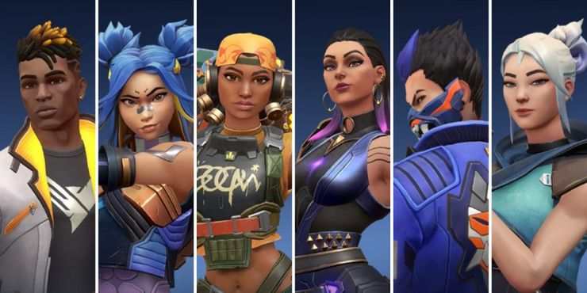
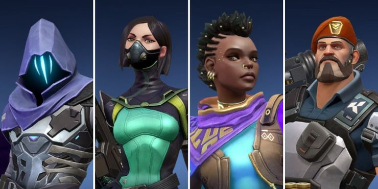
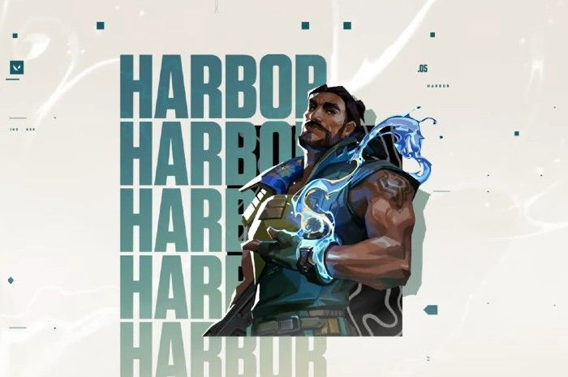
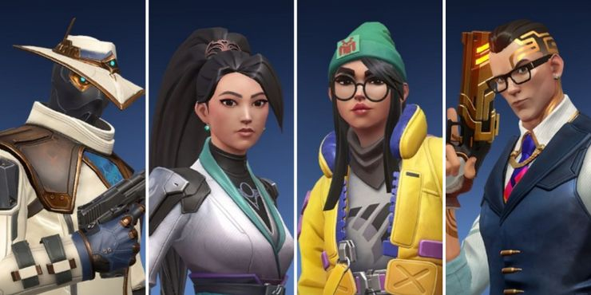
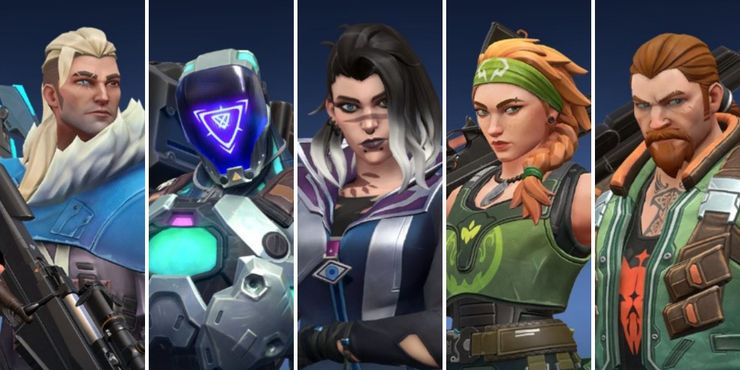

¿Qué es Valorant?

Valorant es un hero shooter en primera persona gratuito y desarrollado por riot games, el mismo de League Of Legends. La primera vez que se anuncio, fue bajo el nombre de Project A en octubre de 2019. el 2 de junio de 2020, lo lanzaron para microsoft windows, despues de su beta cerrada, lanzada el 7 de abril.
Los jugadores asumen el control de agentes, personajes que provienen de una gran cantidad de países y culturas de todo el mundo. En el modo de juego principal, los jugadores se unen al equipo atacante o defensor con cada equipo que tiene cinco jugadores.
Los agentes tienen habilidades únicas y usan un sistema económico para comprar sus habilidades y armas. El videojuego tiene una variedad de armas que incluyen pistolas, subfusiles, escopetas, ametralladoras, fusiles de asalto y fusiles de francotirador. Cada arma tiene un patrón de retroceso que debe ser controlado por el jugador para poder disparar con precisión.
El equipo atacante tiene una bomba, llamada Spike, que necesitan plantar en un sitio. Si el equipo atacante protege con éxito la Spike durante 40 segundos y detona, obtendrán un punto. Si el equipo defensor desactiva con éxito la Spike, o el temporizador de la ronda de 100 segundos expira, el equipo defensor obtiene un punto. Si se eliminan todos los miembros de un equipo, el equipo contrario gana un punto.
Después de doce rondas, el equipo atacante cambia al equipo defensor y viceversa. El primer equipo en ganar 13 rondas gana la partida. Exceptuando el tiempo extra, donde deberás conseguir 2 victorias/rondas seguidas.
En total, hay seis modos de juego: Normal, Competitivo, Deathmatch, Spike Rush, Réplica y Carrera de Armas.
También cuenta con un modo llamado personalizado en el cual se puede crear una partida con los ajustes que el jugador desee, ya sea para jugar entre equipos a nivel profesional o para practicar line-ups, retakes de sites, post-plant, etc.
También cuenta con un modo llamado personalizado en el cual se puede crear una partida con los ajustes que el jugador desee, ya sea para jugar entre equipos a nivel profesional o para practicar line-ups, retakes de sites, post-plant, etc.
Está siendo desarrollado y publicado por Riot Games, que previamente desarrolló League of Legends. El desarrollo comenzó en 2014, dentro de su división de investigación y desarrollo. A Joe Ziegler, Director del videojuego Valorant, se le atribuye la creación de la idea inicial de Valorant al formular qué otros videojuegos podría desarrollar Riot al hablar con otros diseñadores de videojuegos. David Nottingham es el director creativo de Valorant. Trevor Romleski, exdiseñador de League of Legends y Salvatore Garozzo, exjugador profesional y diseñador de mapas de Counter-Strike: Global Offensive son diseñadores de juegos de Valorant.Moby Francke, exdesarrollador de Valve, quien ha sido diseñador de arte y personajes para Half-Life 2 y Team Fortress 2, es el director de arte de Valorant. El juego utiliza el motor Unreal Engine.
Actualmente tiene 20 Agentes para poder jugar
Los duelistas, que son encargados de crear espacios para entrar al site, que son Reyna, Phoenix, Raze, Yoru, Neon y Jett

Los Controladores, que son los encargados de cubrir las areas donde pueden estar los enemigos y facilitar el trabajo del duelista, que son Brimstone, Astra, Viper, Omen y el recientemente agregado, Harbor

Los centinelas, que se encargan de "aguantar" el site cuando lo estan defendiendo o para que no logren ganar el retake enemigo, que son Killjoy, Cypher, Chamber y Sage.

Y por ultimo, pero no menos importantes, los Iniciadores, que se encargan de revelar información sobre donde estan los enemigos, para poder lograr entrar al site o descubrir que site quieren explotar, que son Sova, Skye, Breack, Kay/o y Fade
